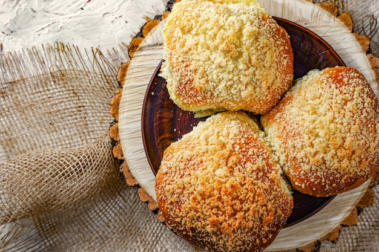

Salgados · Massas fritas/assadas
Pãezinhos rápidos

Ingredientes
- 2 xícaras de farinha de trigo
- 2 1/2 colheres (chá) de fermento em pó
- 1 colher (chá) de sal
- 1/3 xícara de manteiga ou margarina gelada
- Farinha de trigo para polvilhar
Modo de preparo
- Preaqueça o forno em temperatura alta (250 °C). Numa tigela, peneire a farinha, o fermento e o sal. Acrescente a manteiga e, com duas facas, corte em pedacinhos até formar farofa.
- Amasse até incorporar bem. Polvilhe a mesa com farinha, abra a massa com as mãos até 1 cm de espessura.
- Corte com cortador redondo de 5 cm de diâmetro.
- Disponha numa assadeira sem untar e asse no forno preaquecido até levemente dourados (12 a 15 minutos). Deixe esfriar e congele.
Observação: Congelamento: leve ao freezer cobertos com plástico até firmarem; passe para saco plástico, retire o ar, vede e congele. Descongelamento: temperatura ambiente por cerca de 1 hora. Pode variar o sabor com alcaravia, erva-doce ou linguiça antes de assar.